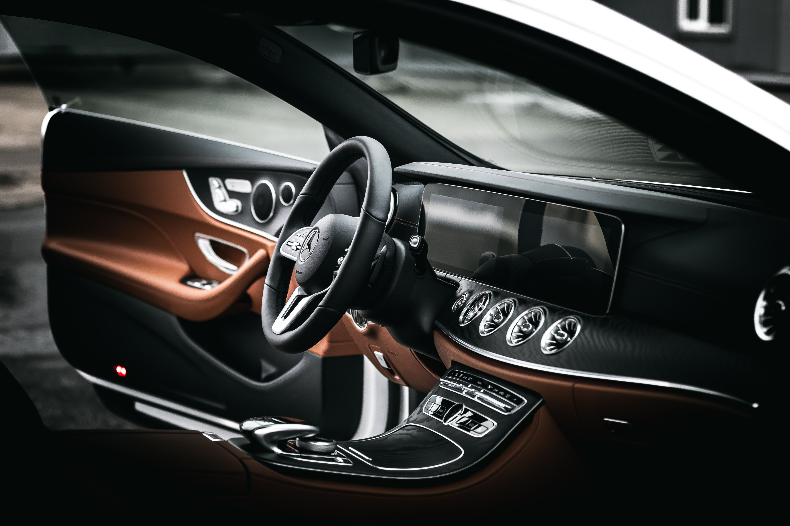

The Design Team
Comic series that follows the story of Petunia, a Mexican designer that just moved to the Bay Area to work in a tech startup.
Overview
SHEchange enables consumers to make ethical buying decisions and collectively influence companies to change unethical policies and behaviors. Users can search, browse, and compare personal care and fashion companies to see how they perform in areas such as animal rights, gender and ethnic diversity, or environmental sustainability. Users can also activate the SHEchange Chrome extension while shopping online in order to quickly and conveniently view company data on the products they are considering.
I collaborated with a team of designers to restructure and redesign the existing SHEchange website and Chrome extension. Our goal was to enable users to easily find, understand, and act upon company data.
Role
UX Research, Information Architecture, Interaction Design, UI Design
Timeframe
November 2018 - January 2019
Challenge
People want to support businesses that are aligned with the values they care about and boycott the ones that don’t. Unfortunately, consumers often don’t have access to reliable information regarding a company’s ethical performance or know how to influence companies to implement policy changes. SHEchange’s mission is to eliminate these barriers and empower users to demand that companies respect all people and respect the earth. In order to achieve this vision and grow their user base, however, they needed to address some usability issues in their existing product.
Our high-level objectives (which we further defined based on research insights) were to:
Photo by Zhang Kenny on Unsplash
Research & Discover
Because of the nascent nature of the product, our team had limited data regarding users and their engagement with website and Chrome extension. In order to uncover and prioritize the most salient user needs and usability issues, we employed the following research methods:
Through our directed interviews we learned some key insights about ethically-minded shoppers who might be inclined to use a product like SHEchange:
They are often more motivated to boycott unethical companies than to actively support ethical ones
They use word-of-mouth, social media, and news sources to gather information about companies' behaviors and ethics.
Scoping & Ideation
Our research led us to prioritize several main issues that needed to be addressed in the existing product:
Favorited companies. This would allow users to track or save companies for future reference and give SHEchange metrics on which companies were popular or trending amongst users. With the addition of a community feature, users would be able to display the collection of companies they support on their public profile to encourage others to shop from them as well.
Blacklisted companies. In the same vein, users could save the companies they have chosen to boycott.
Favorited products. Because SHEchange generates revenue from affiliate links, it was essential that we allow users to easily save and locate the products they were considering for purchase at a later time.
Improved ranking of causes. A logged-in user would see personalized ratings on a company profile based on their most valued causes. Although we wanted users to identify all of the causes they were interested in, we also wanted them to select their top three causes in order to display those ratings on the Chrome extension, on which there was limited real estate. This presented the unique challenge of designing a two-tiered rating system. This would also allow SHEchange to track which causes are the most popular among their users.
Prototyping & Testing
I created a clickable prototype to test my potential solutions. Although the results of my lo-fi prototype were inconclusive, my mid-fi prototype (shown above) generated a lot of rich feedback, revealing a number of issues:
Photo by Andrey Zvyagintsev on Unsplash
Iteration & Testing
The myriad weaknesses exposed in the previous round of testing gave me a lot to improve on. I explored many more possible solutions for the cause ranking system, a few of which are shown below:
Ultimately, a decision was made by the PM to only prompt the user to select a total of three causes, however, the client was presented with some of the more promising solutions for possible future implementation.